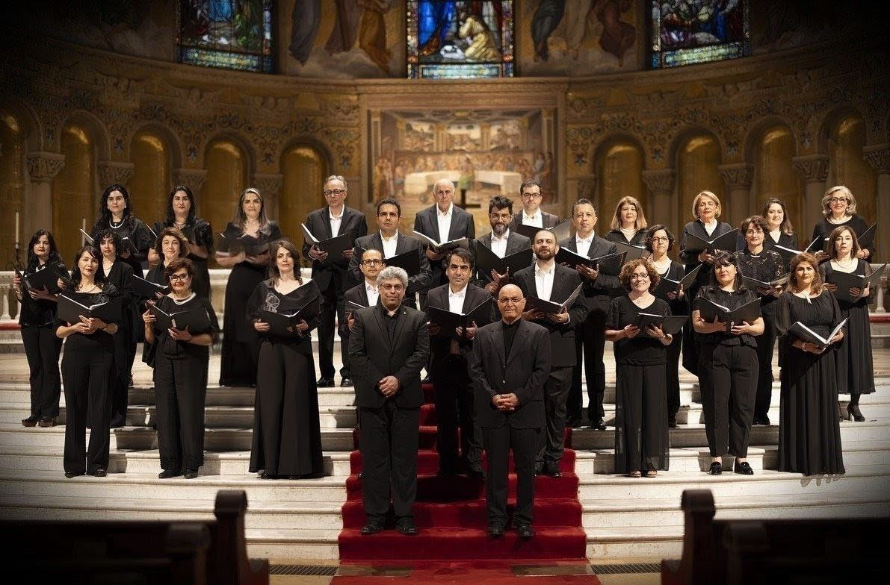
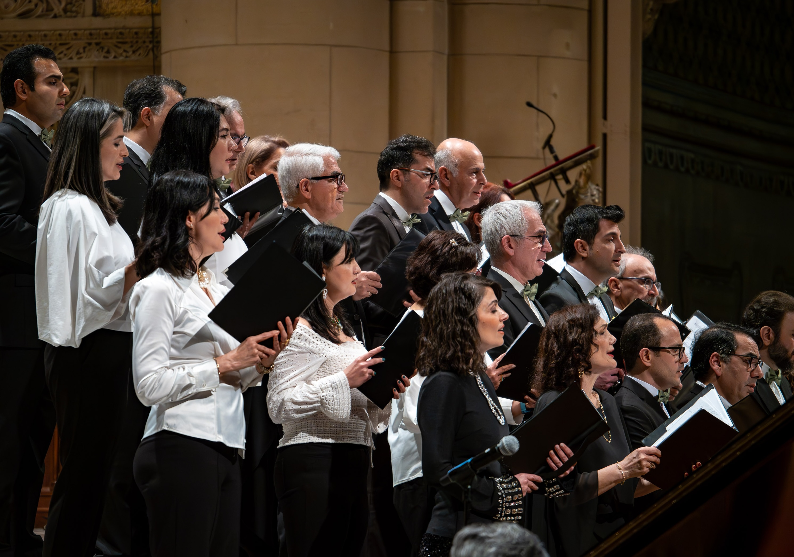
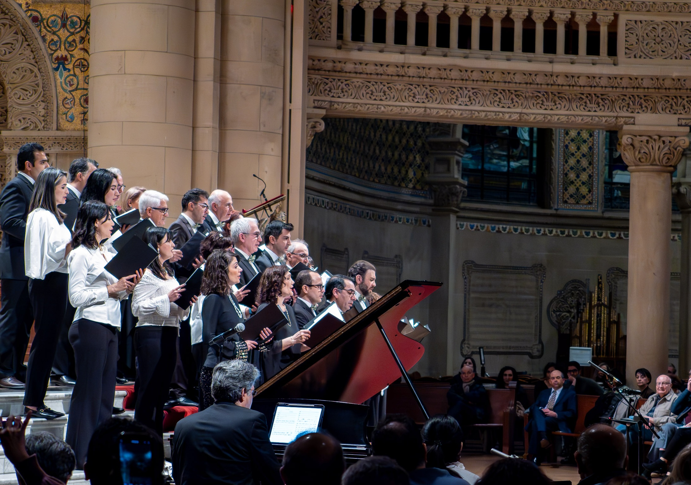
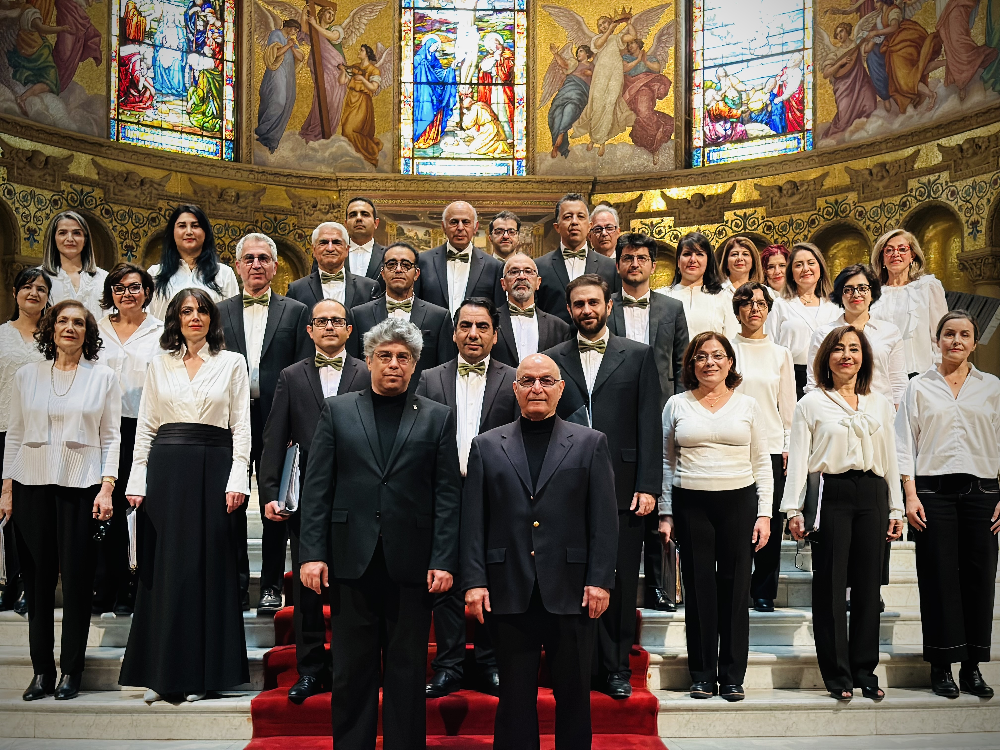
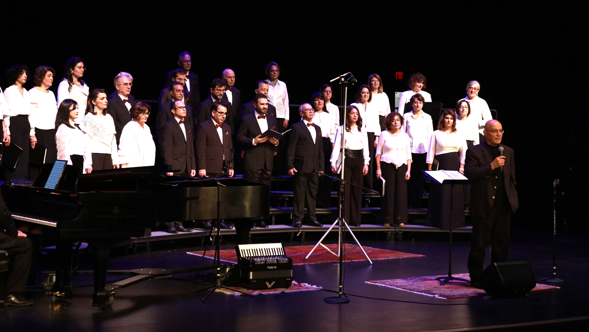
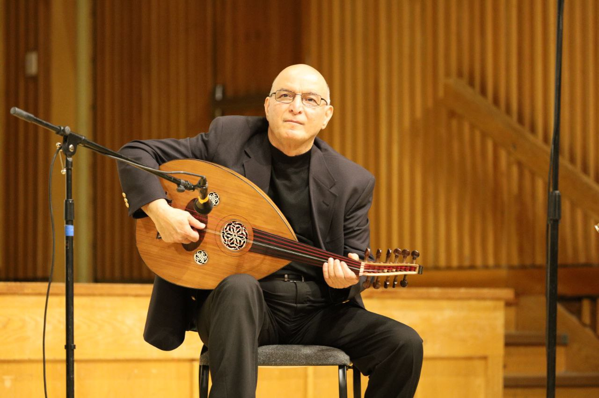

Bay Area Persian Choir Concert
Mountain View Center for the Performing Arts
500 Castro St, Mountain View, CA 94041

San Francisco Bay Area
We perform Persian songs and world music — all levels welcome. Join us for rehearsals and community events.
About Us
Bay Area Persian Choir is a community choir which serves the larger San Francisco Bay Area and strives to preserve, cultivate and promote the rich heritage of Persian music. The group hopes to be able to strengthen the connective tissue in the community through music. The repertoire of choir is comprised of new choral arrangements of all-time classics of Persian music as well as Persian folk and spiritual songs and new compositions.

Upcoming Events
Mountain View Center for the Performing Arts
500 Castro St, Mountain View, CA 94041
Media
Watch our performances and follow us for news, rehearsal moments and concert updates.




Contact Us
Interested in singing with us, attending a concert, or collaborating? Send us an email and we'll get back to you.
bayareapersianchoir@gmail.com